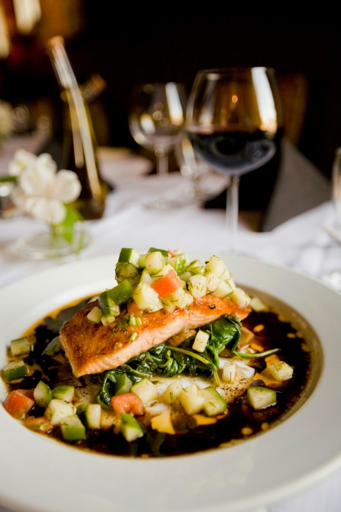

Fresh ingredients, honest cookingTriết lý của chúng tôi
Tinh tế trong
từng điều giản dị.
Chúng tôi tin rằng một bữa ăn đáng nhớ bắt đầu từ nguyên liệu tốt, được chế biến đúng cách và trao đi trong một không gian ấm áp.
Mỗi món ăn tại Savoris là sự kết hợp giữa cảm hứng đương đại và sự trân trọng dành cho hương vị nguyên bản.
Đến với Savoris